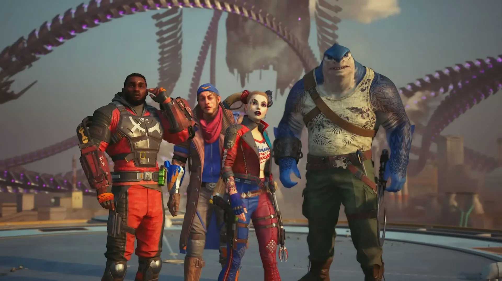
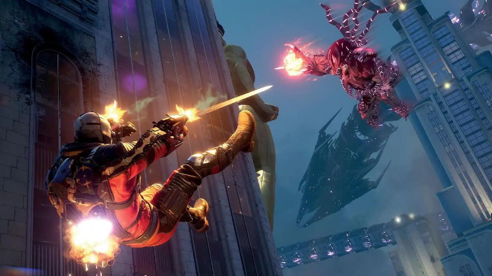

Từng có giá 1,8 triệu, bom tấn bất ngờ giảm giá mạnh, game thủ sở hữu chỉ với chưa tới 150k
Tựa game này lại tiếp tục sale sập sàn thêm một lần nữa.
Trước khi ra mắt, Suicide Squad: Kill The Justice League được kỳ vọng sẽ trở thành tựa game "ăn khách" tiếp theo của Warner Bros sau bộ ba Arkham đình đám.
Thế nhưng hy vọng càng nhiều thì thất vọng càng lớn. Chỉ chưa đầy một năm sau khi ra mắt, Suicide Squad: Kill The Justice League đã gần như "rút ống thở". Thậm chí, nhà phát triển của trò chơi còn khẳng định bản cập nhật trước đó đã là cuối cùng dành cho bom tấn này.
Thế nhưng không thể phủ nhận, bỏ qua một số yếu tố, Suicide Squad: Kill The Justice League vẫn là một tựa game khá chất lượng, nhất là với mức giá đang được sale off tới 90% của nó trên Steam.
Không còn gắn mác 70$ như trước, giờ đây, các game thủ có thể sở hữu ngay Suicide Squad: Kill The Justice League với số tiền ít ỏi, chỉ chưa tới 150.000 VND. Mặc dù gần như chắc chắn rằng trò chơi sẽ không có thêm bất kỳ bản cập nhật nào nữa, thế nhưng rõ ràng thời lượng nội dung cùng với các yếu tố nhập vai thú vị vẫn khiến Suicide Squad: Kill The Justice League trở thành một deal quá hời.

Được biết, Suicide Squad: Kill The Justice League giảm giá nhân dịp sự kiện kỷ niệm ngày sinh của Batman. Dành cho những ai chưa biết, Batman có ba ngày sinh. Ngày 19/2 là mốc thời gian chính thức, và còn một ngày nữa vào 30/3 trong khi lần đầu tiên Bruce Wayne xuất hiện trong truyện tranh cũng là một ngày sinh khác, tổ chức vào 7/4. Và Suicide Squad: Kill The Justice League được giảm giá nhân dịp ngày sinh nhật chính thống của Batman.
Chương trình khuyến mại của Suicide Squad: Kill The Justice League sẽ kéo dài cho tới ngày 27/2 tới đây. Chương trình khuyến mại này cũng bao gồm giảm giá mạnh cho tất cả các trò chơi Arkham khác.